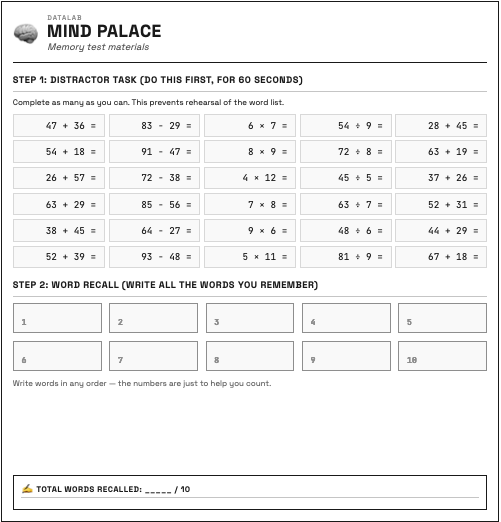
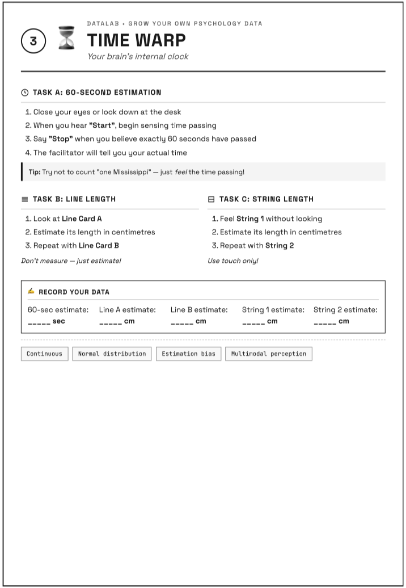
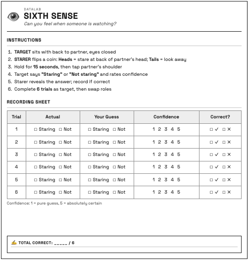
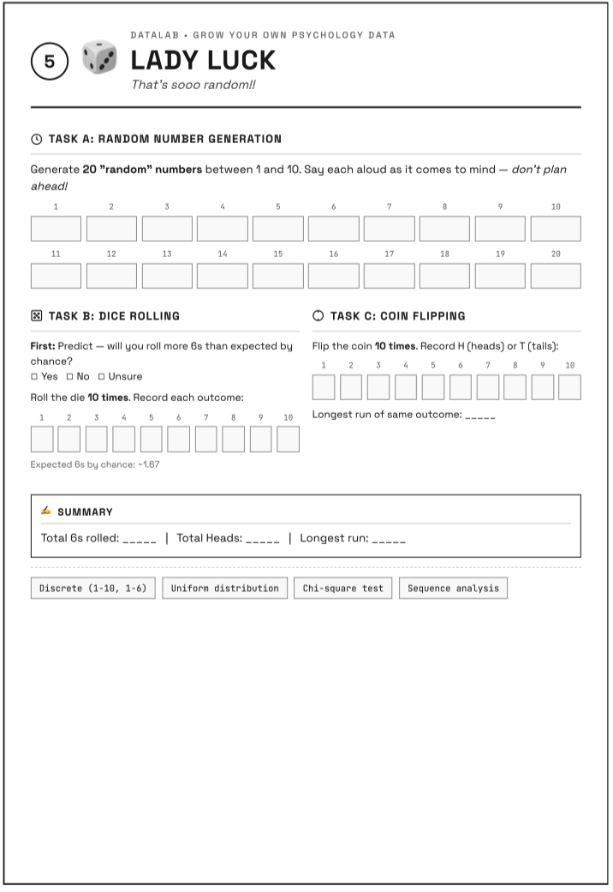
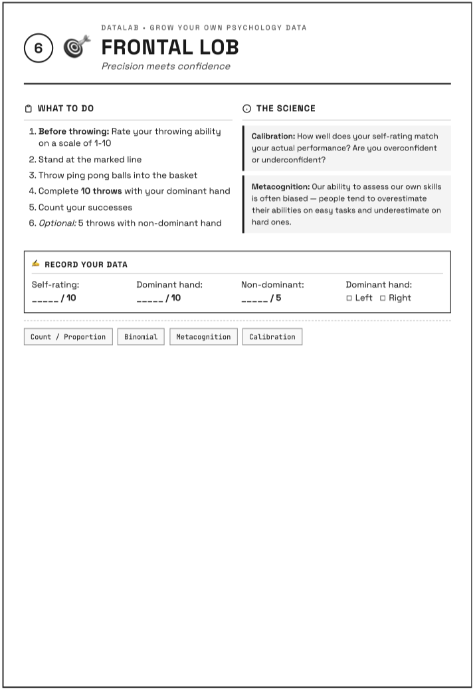

DataLab
Grow Your Own Psychology Data
16 January 2026
Welcome to PS50008A
Research Methods & Experimental Design
Your first session of the module
What is DataLab?
Today you generate the dataset we analyse all term.
- You’ll be both participant and tester
- Work in pairs
- Follow your sequence card
- Complete 5 tasks + memory test
Session Overview
| Time | Activity |
|---|---|
| 10:00–10:25 | Welcome, Part 1 survey, Memory Test |
| 10:25–11:25 | Complete 5 tasks (follow your sequence card) |
| 11:25–11:35 | Part 2 survey & wrap-up |
| 11:35-11:55 | Data Dictionary preview and discussion |
What You’ll Do
- Complete Part 1 survey (demographics, mood, personality)
- Do the Memory Test together
- Follow your sequence card through 5 tasks
- Complete Part 2 survey
Part 1: Getting Started
Get Your Materials
- Collect your lab notebook (with your number)
- Form into pairs (at least) max group size 4!
- Collect a sequence card from your lab instructor
Complete Part 1 Survey
Scan the QR code below or open the link on the VLE:
[Qualtrics link displayed here]
Complete:
- Consent
- Sleep & lifestyle
- Current mood
- Personality (TIPI)
- Demographics
Memory Test
Mind Palace
We do this together as a group.
Two word lists on screen:
- LEFT = List A
- RIGHT = List B
Your instructor tells you which side.
The Procedure
- STUDY (30 sec) — memorise YOUR list
- DISTRACT (60 sec) — maths problems
- RECALL (90 sec) — write on paper
- RECORD — enter in Qualtrics
Ready?
Your instructor will say:
“Look LEFT” or “Look RIGHT”
Have pen and paper ready!
STUDY: Lab 304A (Mozart)
LEFT
WISDOM
COURAGE
JUSTICE
FREEDOM
PATIENCE
LOYALTY
BEAUTY
SPIRIT
HONOUR
TRUTH
RIGHT
HOPE
ANGER
FAITH
POWER
GRACE
VIRTUE
DREAM
PEACE
KNOWLEDGE
SOUL
STUDY: Lab 304B (Silence)
LEFT
APPLE
TABLE
CHAIR
RIVER
MOUNTAIN
GUITAR
CLOCK
PENCIL
FLOWER
BOOK
RIGHT
WINDOW
RABBIT
JACKET
CANDLE
LADDER
BASKET
HAMMER
PILLOW
GARDEN
BOTTLE
DISTRACT
Maths problems — no calculator!
7 × 8 = ? 15 + 27 = ? 64 ÷ 8 = ?
23 − 9 = ? 6 × 9 = ? 81 ÷ 9 = ?
12 + 38 = ? 45 − 17 = ? 8 × 7 = ?
RECALL
Write your words on paper!
Don’t look at the screen.
Record Results
In Qualtrics, enter:
- Words recalled (0–10)
- Which positions you remembered
- Any intrusions (wrong words)
- Strategy used
Task Previews
The 5 Tasks
Follow your sequence card.
Each task: ~15 minutes
Work in pairs — swap roles halfway.
Task 1: Reflex Test
How fast is your nervous system?
- Partner drops ruler without warning
- Catch it as fast as you can
- Record the distance (cm)
- 5 trials each
Task 2: Time Warp
How accurate is your internal clock?
- Estimate when 60 seconds pass
- Estimate line lengths (visual)
- Estimate string lengths (touch only)
Task 3: Sixth Sense
Can you detect being watched?
- Sit back-to-back
- Partner flips coin: stare or look away
- Guess which, rate confidence
- 6 trials each
Task 4: Lady Luck
How random can you be?
- Say 20 “random” numbers (1–10)
- Roll die 10 times
- Flip coin 10 times
Task 5: Frontal Lob
How well do you know your ability?
- Rate your throwing (1–10)
- Throw 10 balls at basket
- Compare prediction to reality
How Tasks Work
- Check your sequence card for task order
- Go to that task area
- Complete with your partner
- Enter data in Qualtrics
- Move to next task on your card
Begin Tasks!
Check Your Sequence Card
Find your first task.
Go there now with your partner.
Task Time: 15 minutes
Move to Next Task
Check your sequence card.
Enter data before moving!
Task Time: 15 minutes
Move to Next Task
Check your sequence card.
Enter data before moving!
Task Time: 15 minutes
Move to Next Task
Check your sequence card.
Enter data before moving!
Task Time: 15 minutes
Move to Next Task
Check your sequence card.
Enter data before moving!
Task Time: 15 minutes (Final)
Part 2: Wrap-up
Complete Part 2 Survey
Return to Qualtrics:
- Mood NOW (compare to before)
- Favourite task
- Least favourite task
- Comments
Pre-Post Design
We measured mood before and after.
This lets us see if DataLab affected how you feel.
Each person is their own control.
What Did We Learn?
Reflex Test
Physics measures your brain!
- Distance fallen → reaction time
- Typical: 150–250 milliseconds
- Did you improve across trials?
What might have affected your data?
- Ruler height consistency?
- Anticipation of the drop?
- Partner’s technique varied?

Mind Palace
Working memory in action
- Miller’s “magical number 7 ± 2”
- Serial position effect: primacy & recency
- Distraction task interfered with rehearsal
What might have affected your data?
- Could everyone hear clearly?
- Did you use a strategy (chunking)?
- Was the distraction task equally hard?

Time Warp
Your brain constructs time
- Most people over- or under-estimate
- Touch vs vision — which is better?
What might have affected your data?
- Did you count in your head?
- When exactly did the stopwatch start?
- Could you see any clocks?

Sixth Sense
Can you detect being watched?
- Chance = 3 out of 6 correct
- Signal detection: hits, misses, false alarms
What might have affected your data?
- Peripheral vision leakage?
- Sound cues from your partner?
- Response bias (saying “yes” more)?

Lady Luck
Humans are bad at random!
- We avoid repeating numbers
- Real randomness has streaks
- Gambler’s fallacy: coins don’t remember
What might have affected your data?
- Number preferences (7 is popular!)
- Did you try to “be random”?
- Were dice/coins recorded accurately?

Frontal Lob
How well do you know yourself?
- Calibration = prediction vs reality
- Metacognition: thinking about thinking
What might have affected your data?
- How was “success” defined?
- Self-serving bias in ratings?
- Was throwing distance consistent?

Why This Matters
Collecting data is hard.
These challenges are why researchers:
- Use standardised procedures
- Define variables operationally
- Train testers for consistency
- Control the environment
When we analyse your data, we’ll consider these factors.
Data Collected Today
| Task | Variables |
|---|---|
| Memory | Words recalled, positions, intrusions |
| Reflex | Reaction times (5 trials) |
| Time Warp | Time, visual, tactile estimates |
| Sixth Sense | Detection accuracy, confidence |
| Lady Luck | Number patterns, dice, coins |
| Frontal Lob | Self-rating, actual performance |
| Pre/Post | Mood, energy, stress |
Summary
What We Did Today
- Completed surveys (mood, personality)
- Memory test together
- 5 tasks as participant and tester
- Experienced variability firsthand
- Created pre-post design
Next Week
Week 12: Your First Lecture
Wednesday 10:00–12:00
- Analyse DataLab results together
- Introduction to distributions
- Your data = teaching examples
See you Wednesday!